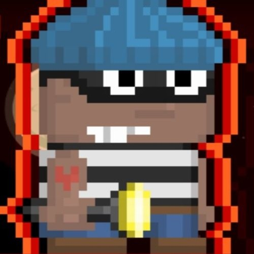

Persiapan Aksi Kriminal

Kartu Identitas Kriminal (Crime Card)
Untuk memulai misi ini, kamu memerlukan setidaknya 1 Crime Card. Berikut adalah status karaktermu saat ini:
- Reputasi: Pickpocket (Level 1)
- Heat Level: 0% (Aman dari polisi)
- Senjata Tersedia: Crowbar
Pilih Lokasi Target
Tekan tombol di bawah ini untuk memulai simulasi peretasan dan pembobolan brankas.
Mulai Bobol Brankas Convenience Store